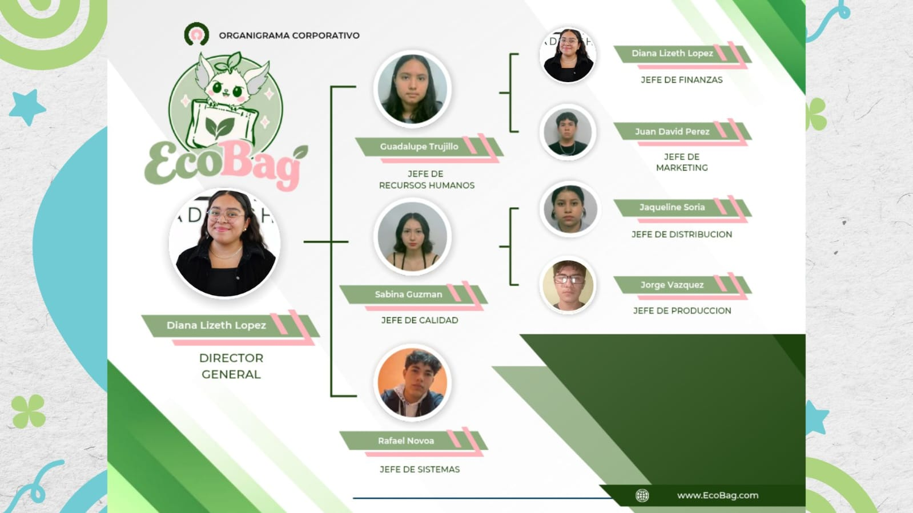
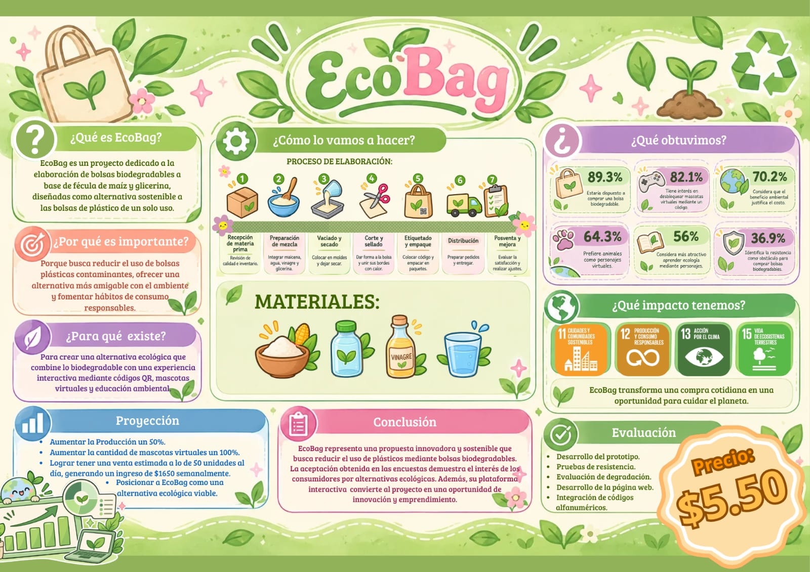

EcoBag es una empresa de Celaya, Guanajuato, dedicada a fabricar bolsas a base de fécula de maíz y glicerina para ofrecer una alternativa al plástico. Nuestro público son las personas y los pequeños negocios celayenses interesados en el cuidado del medio ambiente.
Lleva ternura, siembra vida.

Crear bolsas ecológicas, innovadoras y reutilizables que reduzcan el consumo de plástico y fomenten una relación más consciente con el medio ambiente, integrando experiencias interactivas que conecten a las personas con la naturaleza y promoviendo, mediante el trabajo en equipo y la honestidad, hábitos de consumo más responsables.
Transformar la manera en que las personas usan y desechan las bolsas, ofreciendo alternativas que no solo reemplazan el plástico, sino que devuelven algo a la naturaleza.
Promovemos hábitos responsables que reduzcan el impacto negativo en el medio ambiente.
Valoramos la colaboración, la comunicación y las ideas de cada integrante.
Actuamos con transparencia y damos información clara sobre nuestros productos y su impacto.
El nombre EcoBag combina "Eco" (ecológico) y "Bag" (bolsa).
